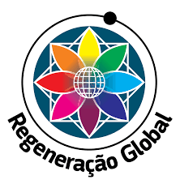
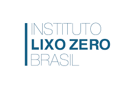
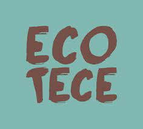

Instituto Regeneração Global
Do Brasil para o mundo, essa ONG possui como principal objetivo a expansão e a consolidação de uma biblioteca de ideias inovadores pela sustentabilidade, a WikiSolution. Nela, você encontra várias alternativas sustentáveis: cerca de 700 soluções de 40 países, disponíveis em 14 idiomas, que contribuem para a regeneração do planeta e o equilíbrio da sociedade. Tudo isso pode ser usado por pessoas, empresas, governos e intuições.

Instituto Lixo Zero Brasil
Para a promoção da conscientização ambiental, esse instituto, que pertence ao conselho da ZWIA (Zero Waste International Alliance, em português Aliança Internacional para o Lixo Zero), realiza a Semana do Lixo Zero em várias cidades do país. O objetivo é promover o reaproveitamento, a reciclagem e o descarte correto dos resíduos recicláveis e orgânicos e a redução do lixo. A entidade atua ainda em diversas missões internacionais para conhecer e difundir boas práticas internacionais de descarte e programas de lixo zero.
